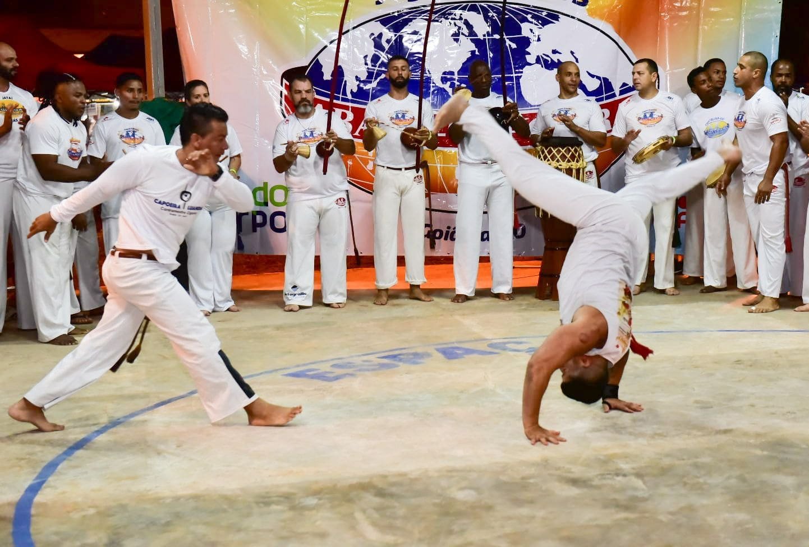
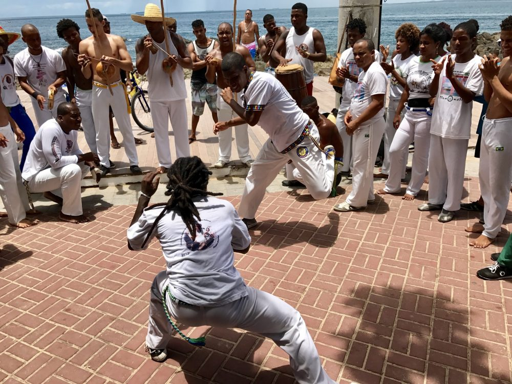
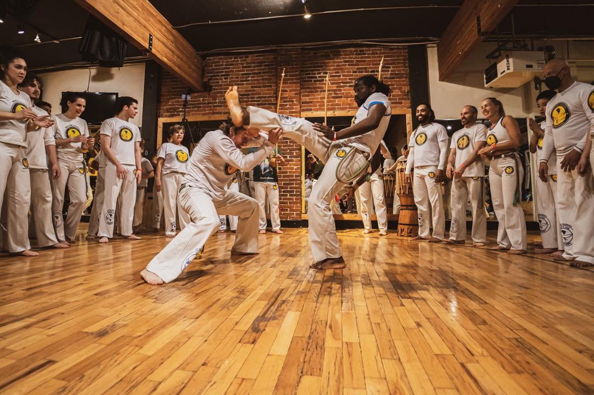
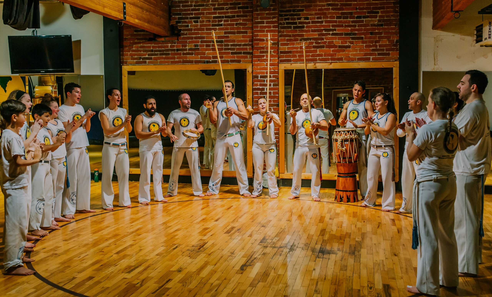
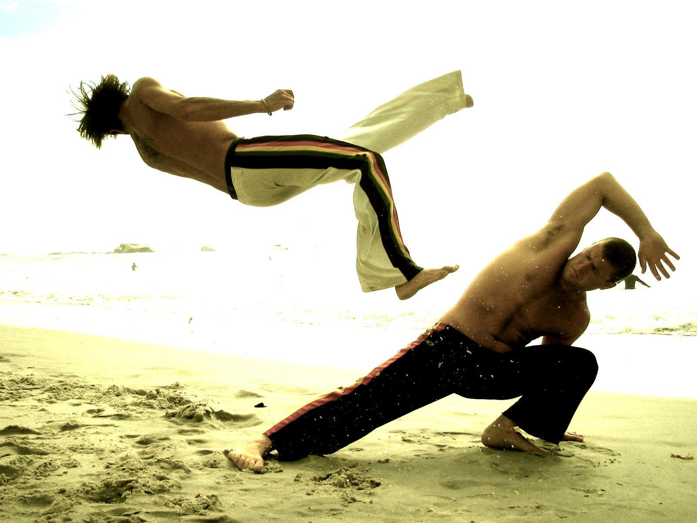

Dança da
malandragem
La Capoeira
La Capoeira es una manifestación cultural afro-brasileña que tiene diversas facetas, como danza, música, acrobacias y expresión corporal. Fue creada en Brasil por los esclavos africanos traídos por los portugueses. Es conocida por sus rápidos y complejos movimientos, que utilizan los brazos y las piernas para ejecutar maniobras de gran agilidad en forma de patadas, fintas y derribos, entre otros. La capoeira como arte marcial incorpora movimientos bajos, derribos, barridos, golpes de mano abierta, de puño, con los codos y las rodillas, con la cabeza e incluso el manejo de armas tradicionales; mientras que en el ámbito artístico y deportivo se hace más énfasis en las acrobacias y las demostraciones ritualizadas de habilidad. Su práctica se desarrolla con música tradicional de tambores, el berimbau (instrumento musical en forma de arco, procedente del hungu tradicional angoleño), y canto.
Es una arte interdisciplinaria que incluye varios aspectos culturales, marciales, deportivos y artísticos. Es un movimiento de conciencia atlética que podría verse, en parte como una danza, un diálogo rítmico con una pareja al compás de la música de los instrumentos tradicionales, y en parte como una pelea, una estrategia contenida de movimientos de ataque y defensa.

La Música
Los instrumentos típicos usados para interpretar la música que acompaña a la capoeira son:
Berimbau; es un instrumento de cuerda arco musical hecho de una vara de madera flexible y un alambre metálico, al que se le agrega una calabaza que sirve como resonador. De acuerdo a su sonido, el berimbau puede ser clasificado como gunga (grave), meio (medio) o viola (agudo). Los tres tipos de berimbau son usados en la roda de capoeira para marcar el ritmo y el estilo del juego. El gunga es el que dirige la roda mientras los otros dos tonos improvisan para avivar la música. Antiguamente, se usaba para avisar a los luchadores que el patrón se acercaba.Pandeiro; similar a una pandereta, pero de mayor tamaño.
Reco-Reco: (raspador también caracaxá o querequexé) es un término genérico que indica los idiófonos cuyo sonido se produce por raspado
Agogô: significa campana o gong en idioma yoruba.
Atabaque: (pronounciado: Ah-tah-bah-keh o ki) es un tambor afrobrasileño de mano, alto y de madera, similar a un tam-tam.
Imágenes







